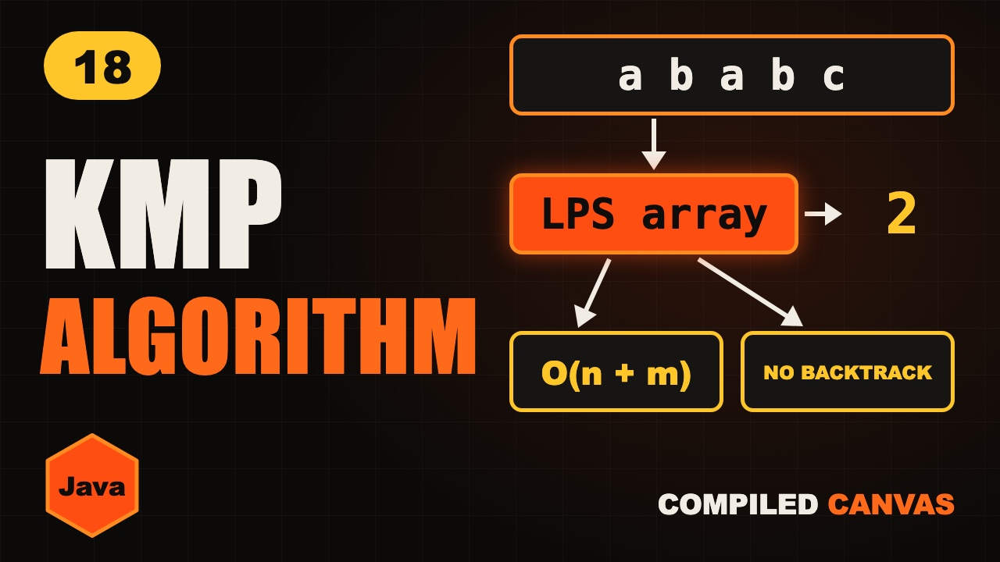

KMP Algorithm in Java: LPS Array Explained Simply

The video goes live on 19 Nov 2026 at 6:00 PM IST. The notes are ready now.
?What this episode covers
The simple way to find a pattern lines it up at every position and compares letter by letter. On bad inputs that's n times m steps, because each time it fails it forgets everything it matched.
KMP reuses what it already matched. The LPS array, the longest prefix that is also a suffix, tells you for every point in the pattern how much you can keep. On a mismatch only j falls back, to lps[j - 1]. The index i into the text never moves backwards.
We build the LPS array for ababc as 0 0 1 2 0, walk the search through abababcab and find the pattern at index 2, then write both parts in Java. Building LPS is O(m) and the search is O(n).
◎What you'll be able to do
- The simple way
- The idea behind KMP
- The LPS array
- A full walkthrough
- The Java code
{ }The Java code from the video
Type it out yourself, or copy it. Each file runs on its own with java FileName.java and prints the examples from the video.
import java.util.*;
// Episode 18: the KMP algorithm. Run: java Kmp.java
public class Kmp {
// lps[i] = length of the longest prefix of p that is also a suffix of p[0..i]
static int[] buildLps(String p) {
int[] lps = new int[p.length()];
int len = 0;
for (int i = 1; i < p.length(); i++) {
while (len > 0 && p.charAt(i) != p.charAt(len))
len = lps[len - 1];
if (p.charAt(i) == p.charAt(len)) len++;
lps[i] = len;
}
return lps;
}
// LeetCode 28: i only moves forward, j falls back with lps
static int strStr(String t, String p) {
if (p.isEmpty()) return 0;
int[] lps = buildLps(p);
int j = 0;
for (int i = 0; i < t.length(); i++) {
while (j > 0 && t.charAt(i) != p.charAt(j))
j = lps[j - 1];
if (t.charAt(i) == p.charAt(j)) j++;
if (j == p.length()) return i - j + 1;
}
return -1;
}
public static void main(String[] args) {
System.out.println(Arrays.toString(buildLps("ababc"))); // [0, 0, 1, 2, 0]
System.out.println(Arrays.toString(buildLps("aabaa"))); // [0, 1, 0, 1, 2]
System.out.println(strStr("abababcab", "ababc")); // 2
System.out.println(strStr("hello", "xyz")); // -1
}
}!The mistake to watch for
Moving i backwards on a mismatch. Only j falls back.
✦Key moments tap one to jump there
↗Full transcript
Read the whole lesson
You press control F and type a word. Somehow, the computer finds it in a whole book, instantly.
The simple way checks the pattern at every position. On bad inputs, that's n times m steps.
The KMP algorithm does it in O of n plus m. Its trick is simple. It never walks backwards in the text.
Welcome back to Compiled Canvas. This is Episode Eighteen of our DSA series. Last time, we learned palindromes, anagrams and frequency counting.
Here's the plan. First, the simple way, and where it wastes time. Then the idea behind KMP. Then the LPS array. Then a full walkthrough. And the Java code. A cheat sheet. And an easy quiz at the end.
Let's go.
Here's our text, and the pattern we're looking for. A b a b c.
The simple way lines the pattern up at the start and compares letter by letter. A b a b all match.
Then the fifth letter fails. The text has a, the pattern has c.
Now the simple way slides the pattern by just one, and starts comparing all over again. It throws away everything it just learned.
On text like a a a a a a b, that happens again and again. That's where the n times m comes from.
Look again at the mismatch. We had matched a b a b.
The end of that, a b, is also the start of the pattern. So we already know those two letters match. No need to check them again.
So instead of starting over, we slide the pattern so that a b lines up, and carry on from the same spot in the text.
To do this fast, we need to know, for every point in the pattern, how much of it can be reused. That's the LPS array.
LPS means longest prefix that is also a suffix. For each position, it tells us how long a start of the pattern also ends there.
For a, there's nothing to reuse. Zero. For a b, the start a and the end b don't match. Zero.
For a b a, the a at the start is also the a at the end. One.
For a b a b, a b starts it and a b ends it. Two.
For a b a b c, no start of the pattern ends in c. Zero. So the LPS array is zero, zero, one, two, zero.
Now the search. I walks through the text and never goes back. J tracks how much of the pattern matches.
A b a b match, so j climbs to four.
At i four, a doesn't match c. So j jumps back to LPS of three, which is two. I stays where it is.
Now a matches a, b matches b, and c matches c. J reaches five, the full pattern.
Found at index two. And i only ever moved forward. That's O of n plus m.
Here's the Java code. Len is how much of the pattern's start we've matched so far.
If the next letter doesn't match, fall back using the LPS array itself, just like the search does.
If it matches, len grows by one. Store it, and move on.
Quick pause, before we go further. If you're finding this video valuable, hit subscribe to Compiled Canvas, and turn on the bell. It's free, it takes one second, and it helps me keep making this complete DSA series for you. Alright, back to it.
The search looks almost the same. I walks the text once, in a normal for loop.
On a mismatch, j falls back with the LPS array. I never moves back.
On a match, j grows. When j reaches the pattern's length, we found it. Return where it started.
This solves LeetCode twenty eight, find the first occurrence. Building LPS is O of m, and the search is O of n.
Your turn. Pause, and build the LPS array for a a b a a.
The answer is zero, one, zero, one, two. The last a a is also the first a a.
So, here's the whole thing in one cheat sheet. Pause and screenshot this.
The simple way can take n times m steps.
KMP never walks backwards in the text.
LPS means longest prefix that is also a suffix.
On a mismatch, j becomes LPS of j minus one.
When j reaches m, the pattern is found.
KMP is O of n plus m.
Okay, quiz time. Three easy questions. Pause the video, think, and then hit play.
Question one. What's the LPS array for a b a b?
Question two. On a mismatch, does i move backwards?
Question three. What's the time of KMP?
Ready?
Question one: Zero, zero, one, two.
Question two: No. Only j falls back.
Question three: O of n plus m.
How many did you get right? Tell me in the comments: three out of three, two, or one.
Let's recap. The simple way forgets what it matched. KMP reuses what it already matched. The LPS array says how much to reuse. I only moves forward. O of n plus m.
Your homework. Solve LeetCode twenty eight, find the index of the first occurrence, with KMP. Then try four fifty nine, repeated substring pattern. And then build the LPS array for a b a c a b a b by hand. Hints and Java answers are on compiled canvas dot com.
Next episode, two more pattern matchers. Rabin-Karp with rolling hashes, and the Z algorithm.
And don't forget to subscribe to Compiled Canvas, so you don't miss anything new in tech and the job market. Keep coding, stay consistent, and I'll see you in the next one.